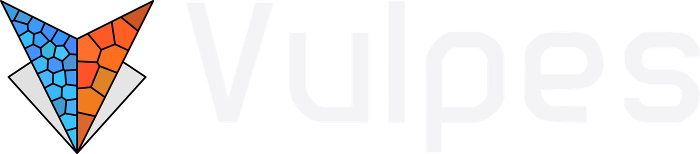

Polytopal meshes
Polygonal and polyhedral elements of any shape: Voronoi, agglomerated, periodic, 2D and 3D, generated with Triangle, TetGen and Voro++.

A Versatile and parallel compUtational Library for high-order discontinuous Polytopal Element Simulations
Open-source C++ for multiphysics and multiscale differential problems, solved with discontinuous finite elements on general polygonal and polyhedral meshes.
Why Vulpes
Vulpes is written in modern C++ and built on PETSc and MPI. It gives you the building blocks of a polytopal discontinuous Galerkin solver, from mesh to linear system, and leaves the physics to you.
Polygonal and polyhedral elements of any shape: Voronoi, agglomerated, periodic, 2D and 3D, generated with Triangle, TetGen and Voro++.
Arbitrary polynomial degree on general elements, with assemblers for diffusion, elasticity, advection and hyperbolic systems such as shallow water.
Distributed meshes and linear algebra on MPI and PETSc, with graph partitioning through PT-Scotch and ParMETIS.
Coarsen fine meshes into polytopes with k-means, METIS or Graph Neural Networks, including material-aware segregated agglomeration.
Couple fields and models through a modular assembly layer, with JSON parameter files and runtime expressions for coefficients and data.
GPL-3.0 licensed, with continuous integration, unit tests, a Docker development image and VTK output for ParaView.
Use the development container, or build natively against your PETSc installation. The full procedure is in the install guide.
# clone with the third-party submodules
git clone --recursive https://github.com/vulpeslib/vulpes.git
cd vulpes && mkdir build && cd build
cmake .. -DCMAKE_BUILD_TYPE=Release
make -jGallery
Each example comes from a tutorial in the documentation. Click a card to read how it is built.
Research
Papers whose results were obtained with Vulpes. Have one to add? Let us know.
This work received funding from the European Union (ERC SyG, NEMESIS, project number 101115663). Views and opinions expressed are, however, those of the authors only and do not necessarily reflect those of the European Union or the European Research Council Executive Agency. Neither the European Union nor the granting authority can be held responsible for them.